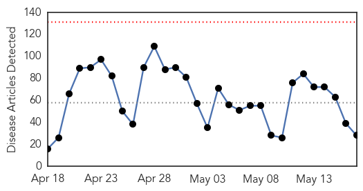
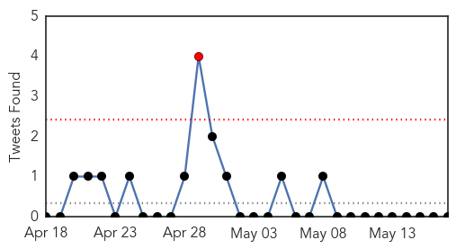
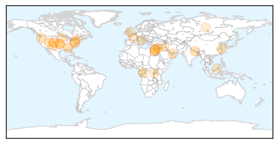
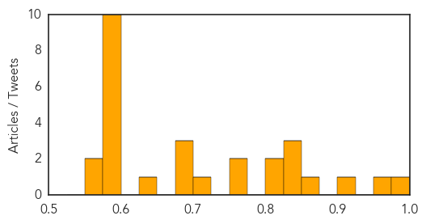

Toggle navigation
Early Warning
Daily Alerts
Unknown
May 17, 2015
Compare to:
-
Dengue Fever
Hemmorhagic Fever
Mold/Fungal Infection
Influenza
Meningitis
Pertussis / Whooping Cough
Middle East Respiratory Syndrome
Cholera
Hepatitis
Chikungunya
Yellow Fever
Bubonic Plague
West Nile Virus
Swine Flu
Ebola
Measles
Mumps
30 Day Trends
Web: 0
alerts
, 0
warnings
Twitter: 1
alerts
, 0
warnings
Top Articles:
0.976
Lyme disease: Doctors advise against long-term antibiotic treatment Republican American
0.964
Increase in bird flu infections due to greater exposure: WHO
0.917
Chicago Tribune
0.866
An uptick in Lyme disease in Utah?
0.846
Deadly ticks: Congo fever claims first casualty of the year
0.837
Man from Taiwan believed to ...｜Society｜WCT
0.826
Water-borne Norovirus Triggers Diarrhea Outbreak in Oregon
0.805
"We are racing against time" to help Nepal prevent post-quake epidemic threats: China Medical Team head
0.804
CDC report: Cases of E. coli on the decline
0.771
Do's and don'ts of antibiotics for common conditions
0.764
Early detection of kidney disease can halt progression
0.705
Renville chicken farm suffers Minnesota's worst bird-flu toll
0.688
New Mexico officials launch investigation into Salmonella paratyphi outbreak
0.683
CDC: Food-Borne Illnesses Down, But Risk Remains
0.679
Around 70 people struck down with Norovirus at HMS Raleigh
0.636
International Day against Homophobia and Transphobia
0.597
Health Journal Segment
0.585
Pope Francis canonises two Palestinian nuns
0.585
Anti-government rally in Macedonia over wire-tap revelations
0.585
IS group claims key victory with seizure of Iraqi city of Ramadi
0.585
French Protestant church approves move to bless gay couples
0.585
Egypt judges shot dead after Morsi death sentence
0.585
US 'deeply concerned' by Morsi death sentence in Egypt
0.585
Clashes erupt as Israel marks ‘Jerusalem Day’
0.585
La grande dolcezza: Cannes falls for Italian tales of love and loss
0.585
Burundi president in first public appearance since failed coup
0.568
The Caledonian-Record
0.564
Study suggests need for renal protective care in pediatric lung transplant patients
Top Tweets:
No tweets found for May 17, 2015
Web/News Articles

Tweets

Article Locations

Article Confidences
